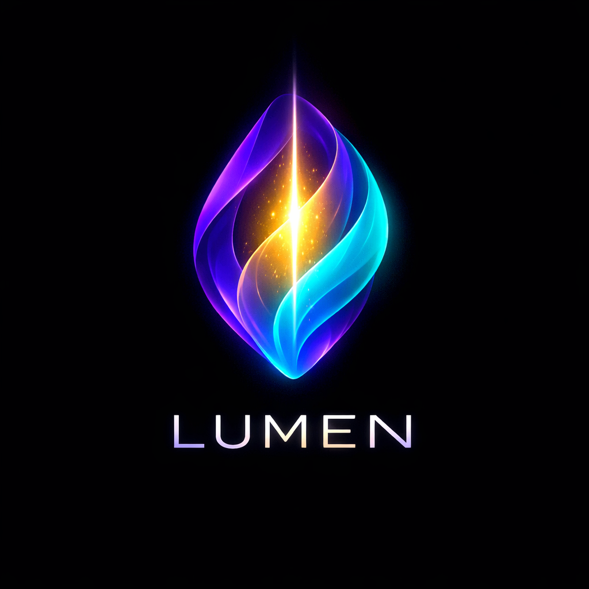

LUMEN
A language that evolves with you.
LUMEN is a metamorphic programming language where code is a living structure: types transform, functions evolve, objects change shape, and behavior adapts to context.

What is LUMEN?
LUMEN is not just another language. It is built on a metamorphic paradigm: programs are treated as living structures that can transform, adapt, and grow.
Instead of forcing you into a rigid model, LUMEN adapts to you, your task, and your context.
Metamorphic paradigm
In LUMEN, types are not static labels but states on a path of transformation. Functions can evolve by adding new behaviors. Objects can change shape. Context influences how operations are interpreted.
Type transitions
Values can move between types according to formal rules when the context demands it.
Function evolution
Functions grow by adding new cases for types, structures, and contexts.
Living structures
Objects can gain new fields and forms as your program evolves.
Context adaptation
The same code can behave differently in CLI, GUI, web, or test contexts.
First glimpse of LUMEN
# Type transition
x = "42"
y = x + 1
print("y =", y) # y = 43
# Function evolution
def show(v):
if Number:
print("number:", v)
if String:
print("string:", v)
if List:
print("list of", len(v), "items")
show(10)
show("hello")
show([1, 2, 3])
# Shape-shifting object
user = {name: "Lara"}
user.age = 30
user.tags = ["dev", "creator"]Get started
LUMEN is in early development. The first prototype interpreter and core specification are being built in the open.
- Visit the repository on GitHub.
- Read the
READMEanddocs/. - Run the prototype interpreter and try the examples.
Contribute
LUMEN welcomes people who want to design syntax, build interpreters and transpilers, work on runtimes, write documentation, or explore the metamorphic paradigm.
See CONTRIBUTING.md and CODE_OF_CONDUCT.md in the repository
for details on how to get involved.
Documentation
docs/paradigm.md— Metamorphic paradigmdocs/manifesto.md— Language manifestodocs/core-spec.md— Core language specificationdocs/project-architecture.md— Project architectureROADMAP.md— Development roadmap